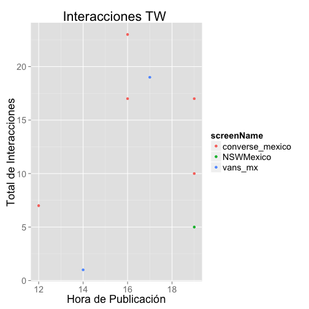
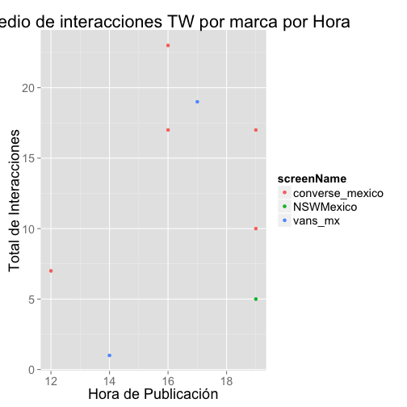

By Claudia V
The first user you input should be your brand and the other two the competitors. The users should be entered as: "@brand" or "brand"
Be patience it might take a couple of minutes to load the data from TW
Each TW user you input retreives the latest 100 mentions*. *There might be some cases when there are not enough mentions to retreive, there are some blank tweets due to the change in RT's by Twitter.
I was not able to make this using the dynamic data, but I've included a sample of the analysis Tweets are separated to get the ones made exclusively by each brand and the number of RTs and Fav is added into interactions.
 
This project was created for the Coursera Data Science Specialization Shiny R Studio Tutorials TwitterR package http://blog.dataweave.in/post/96618078833/building-a-twitter-sentiment-analysis-app-using-r